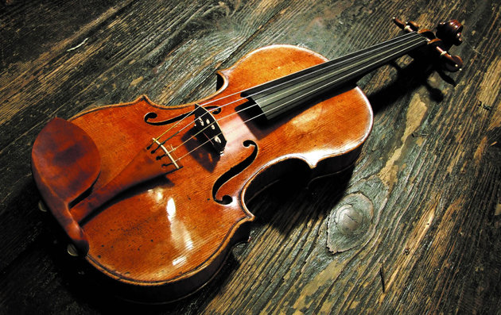

Hobbi
A kedvenc hobbim a zenélés. Több hangszeren is megtanultam játszani az évek során. Az első ezek közül a hegedű volt, amit első osztályos koromban kezdtem el. A közel 12 év során főképpen népzenét tanultam magántanároknál, azonban egy időben klasszikus műfajt is tanultam zeneiskolában. Jóval később, csak gimnazista koromban kezdett el vonzani a zongorázás is. Ezt csak autodidakta módon, tanárok nélkül próbáltam elsajátítani. Ezen a hangszeren főleg modern zenéket tanulgattam, saját magam szórakozatatására. Jövőbeli terveimben még a gitározás megtanulása is szerepel.